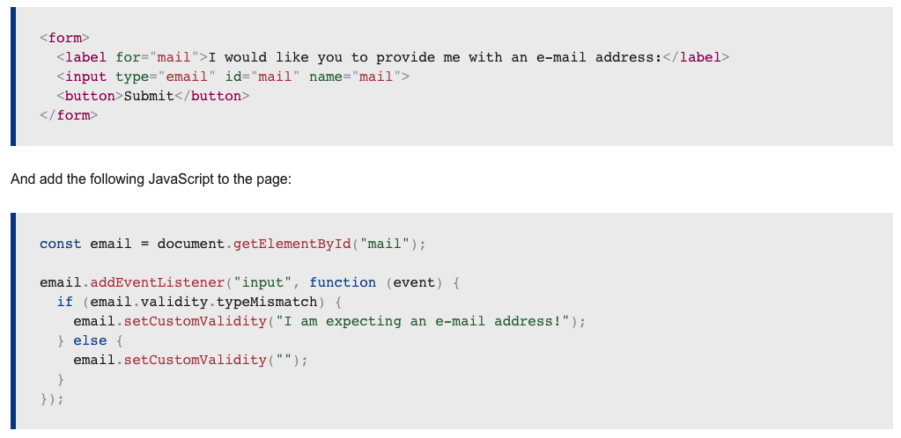
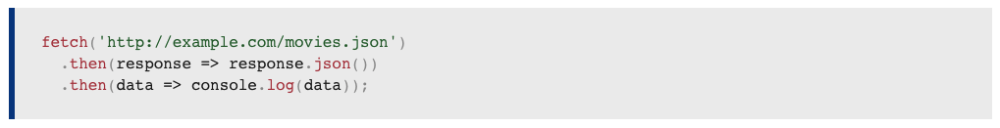
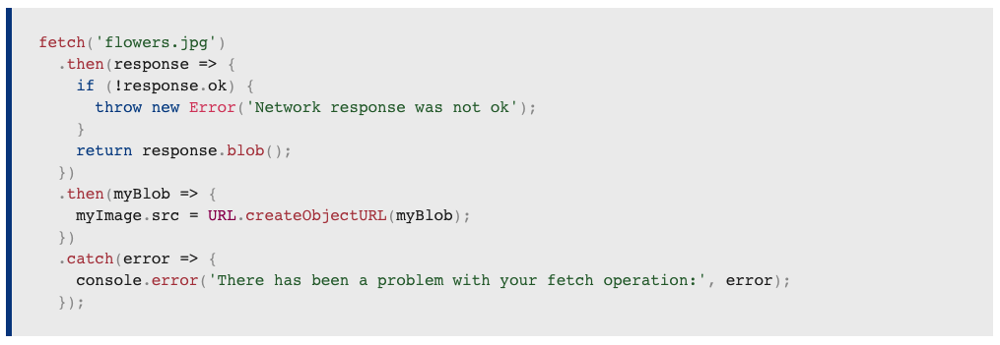
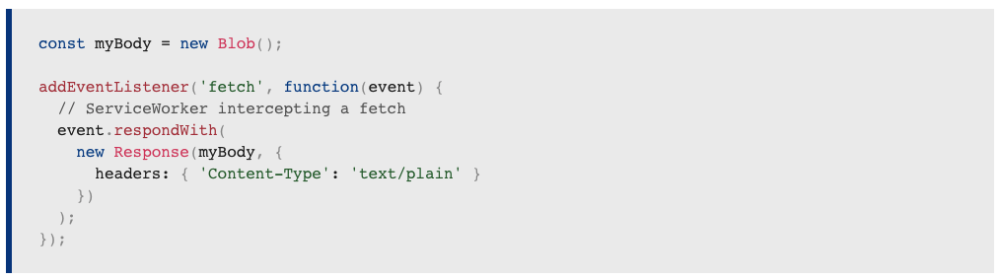

Readings
What is form validation?
Go to any popular site with a registration form, and you will notice that they provide feedback when you don't enter your data in the format they are expecting. You'll get messages such as:
- "This field is required" (You can't leave this field blank).
- "Please enter your phone number in the format xxx-xxxx" (A specific data format is required for it to be considered valid).
- "Please enter a valid email address" (the data you entered is not in the right format).
- "Your password needs to be between 8 and 30 characters long and contain one uppercase letter, one symbol, and a number." (A very specific data format is required for your data).
This is called form validation. When you enter data, the browser and/or the web server will check to see that the data is in the correct format and within the constraints set by the application. Validation done in the browser is called client-side validation, while validation done on the server is called server-side validation. In this chapter we are focusing on client-side validation.
Validating forms using JavaScript
Using Fetch
The Fetch API provides a JavaScript interface for accessing and manipulating parts of the HTTP pipeline, such as requests and responses. It also provides a global fetch() method that provides an easy, logical way to fetch resources asynchronously across the network.
Here we are fetching a JSON file across the network and printing it to the console. The simplest use of fetch() takes one argument — the path to the resource you want to fetch — and returns a promise containing the response (a Response object).
This is just an HTTP response, not the actual JSON. To extract the JSON body content from the response, we use the json() method (defined on the Body mixin, which is implemented by both the Request and Response objects.)
Checking that the fetch was successful
A fetch() promise will reject with a TypeError when a network error is encountered or CORS is misconfigured on the server-side, although this usually means permission issues or similar — a 404 does not constitute a network error, for example. An accurate check for a successful fetch() would include checking that the promise resolved, then checking that the Response.ok property has a value of true. The code would look something like this:
Response objects
As you have seen above, Response instances are returned when fetch() promises are resolved.
The most common response properties you'll use are:
- Response.status — An integer (default value 200) containing the response status code.
- Response.statusText — A string (default value ""), which corresponds to the HTTP status code message. Note that HTTP/2 does not support status messages.
- Response.ok — seen in use above, this is a shorthand for checking that status is in the range 200-299 inclusive. This returns a Boolean.
They can also be created programmatically via JavaScript, but this is only really useful in ServiceWorkers, when you are providing a custom response to a received request using a respondWith() method:
